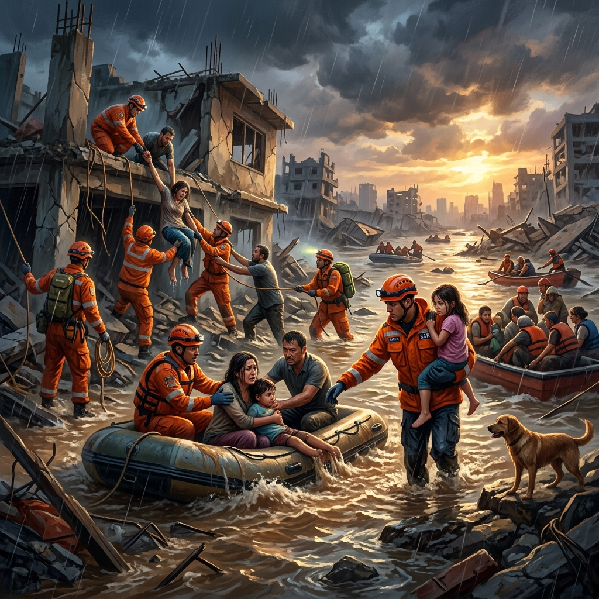
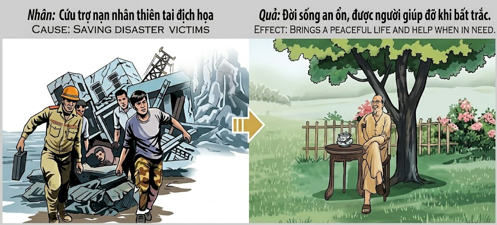

El Refugio de la CompasiónThe Shelter of CompassionIl Rifugio della Compassione慈悲的庇护所ملاذ الرحمةПриют состраданияDie Zuflucht des MitgefühlsLe refuge de la compassion慈悲の避難所O Refúgio da CompaixãoNơi Trú Ẩn Của Lòng Từ Bi
Quien extiende su mano para rescatar a los afligidos por el desastre, construye para sí mismo un santuario de paz y hallará auxilio cuando las tormentas de la vida llamen a su puerta.He who extends his hand to rescue those afflicted by disaster, builds for himself a sanctuary of peace and will find help when the storms of life knock on his door.Chi tende la mano per soccorrere gli afflitti dal disastro, costruisce per sé un santuario di pace e troverà aiuto quando le tempeste della vita busseranno alla sua porta.伸出援手营救受灾者的人，是在为自己建造一座和平的圣殿，并将在生活的风暴敲门时得到回报。من يمد يده لإنقاذ المنكوبين من الكوارث، يبني لنفسه ملاذاً من السلام وسجد العون عندما تطرق عواصف الحياة بابه.Тот, кто протягивает руку помощи пострадавшим от бедствия, строит для себя обитель мира и найдет помощь, когда бури жизни постучат в его дверь.Wer seine Hand ausstreckt, um die vom Unglück Betroffenen zu retten, baut sich selbst eine Zuflucht des Friedens und wird Hilfe finden, wenn die Stürme des Lebens an seine Tür klopfen.Celui qui tend la main pour secourir les affligés du désastre se construit un sanctuaire de paix et trouvera de l'aide lorsque les tempêtes de la vie frapperont à sa porte.災害に苦しむ人々を救うために手を差し伸べる者は、自らのために平和の聖域を築き、人生の嵐が扉を叩く時に助けを見出すでしょう。Quem estende a mão para resgatar os aflitos pelo desastre, constrói para si um santuário de paz e encontrará auxílio quando as tempestades da vida baterem à sua porta.Kẻ nào giang tay cứu giúp những người gặp nạn trong thiên tai, kẻ đó đang tự bồi đắp cho mình một nơi trú ẩn an lành và sẽ nhận được sự trợ giúp khi những giông bão của cuộc đời ập đến.
La naturaleza es impredecible y, a veces, devastadora. En los momentos de mayor vulnerabilidad, cuando el agua sube o la tierra tiembla, surge la verdadera esencia del ser humano: la compasión. Aquellos que arriesgan su propia seguridad para salvar a otros de las garras de los desastres naturales están sembrando las semillas más poderosas del karma. Este acto de desprendimiento y valor no solo salva vidas físicas, sino que purifica el alma del rescatista.
El universo responde a este heroísmo otorgando una vida futura caracterizada por la estabilidad y el sosiego. Quien fue el refugio para otros en su momento de desesperación, nunca se encontrará solo ante la adversidad. La paz que brindaron a los demás regresará multiplicada, manifestándose como una vida rodeada de serenidad y una red de apoyo incondicional que aparecerá mágicamente en sus propios momentos de necesidad.
Nature is unpredictable and, at times, devastating. In moments of greatest vulnerability, when the water rises or the earth shakes, the true essence of the human being emerges: compassion. Those who risk their own safety to save others from the clutches of natural disasters are sowing the most powerful seeds of karma. This act of selflessness and courage not only saves physical lives but purifies the soul of the rescuer.
The universe responds to this heroism by granting a future life characterized by stability and tranquility. He who was a refuge for others in their moment of despair will never find himself alone in the face of adversity. The peace they gave to others will return multiplied, manifesting as a life surrounded by serenity and an unconditional support network that will appear magically in their own moments of need.
La natura è imprevedibile e, a volte, devastante. Nei momenti di maggiore vulnerabilità, quando l'acqua sale o la terra trema, emerge la vera essenza dell'essere umano: la compassione. Coloro che rischiano la propria sicurezza per salvare gli altri dalle grinfie dei disastri naturali stanno seminando i semi più potenti del karma. Questo atto di altruismo e coraggio non solo salva vite fisiche, ma purifica l'anima del soccorritore.
L'universo risponde a questo eroismo garantendo una vita futura caratterizzata da stabilità e tranquillità. Chi è stato un rifugio per gli altri nel loro momento di disperazione non si troverà mai solo di fronte alle avversità. La pace che hanno dato agli altri tornerà moltiplicata, manifestandosi come una vita circondata dalla serenità e da una rete di supporto incondizionato che apparirà magicamente nei loro momenti di bisogno.
自然是不可预测的，有时甚至是毁灭性的。在最脆弱的时刻，当潮水上涨或大地摇晃时，人类真正的本质——慈悲——就会显现出来。那些冒着生命危险将他人从自然灾害的爪牙中解救出来的人，正在播撒业力中最强大的种子。这种无私和勇气的行为不仅挽救了物质生命，还净化了救援者的灵魂。
宇宙对这种英雄主义的回应是赋予未来的生活以稳定和安宁的特征。那些在他人绝望时刻提供庇护的人，在面对逆境时永远不会发现自己孤身一人。他们给予他人的和平将成倍增加返还，表现为一种被宁静包围的生活，以及在他们自己需要的时刻魔法般出现的无条件支持网络。
الطبيعة لا يمكن التنبؤ بها، وهي مدمرة في بعض الأحيان. في لحظات الضعف الشديد، عندما يرتفع منسوب المياه أو تهتز الأرض، تظهر الجوهر الحقيقي للإنسان: الرحمة. أولئك الذين يخاطرون بسلامتهم لإنقاذ الآخرين من براثن الكوارث الطبيعية يزرعون أقوى بذور الكارما. إن فعل نكران الذات والشجاعة هذا لا ينقذ أرواحاً مادية فحسب، بل يطهر روح المنقذ.
يستجيب الكون لهذه البطولة بمنح حياة مستقبلية تتميز بالاستقرار والسكينة. من كان ملاذاً للآخرين في لحظة يأسهم، لن يجد نفسه وحيداً أبداً في مواجهة الشدائد. إن السلام الذي قدموه للآخرين سيعود مضاعفاً، متجلياً في حياة محاطة بالهدوء وشبكة دعم غير مشروطة ستظهر بشكل سحري في لحظات حاجتهم الخاصة.
Природа непредсказуема и порой разрушительна. В моменты величайшей уязвимости, когда поднимается вода или дрожит земля, проявляется истинная сущность человека — сострадание. Те, кто рискует собственной безопасностью, спасая других из когтей природных бедствий, сеют самые мощные семена кармы. Этот акт самоотверженности и мужества не только спасает физические жизни, но и очищает душу спасателя.
Вселенная отвечает на этот героизм, даруя будущую жизнь, характеризующуюся стабильностью и спокойствием. Тот, кто был убежищем для других в момент их отчаяния, никогда не окажется один перед лицом трудностей. Мир, который они дали другим, вернется сторицей, проявляясь в жизни, окруженной безмятежностью, и сети безусловной поддержки, которая волшебным образом появится в их собственные моменты нужды.
Die Natur ist unvorhersehbar und manchmal verheerend. In Momenten größter Verwundbarkeit, wenn das Wasser steigt oder die Erde bebt, tritt das wahre Wesen des Menschen hervor: das Mitgefühl. Diejenigen, die ihre eigene Sicherheit riskieren, um andere aus den Klauen von Naturkatastrophen zu retten, säen die mächtigsten Samen des Karmas. Dieser Akt der Selbstlosigkeit und des Mutes rettet nicht nur physisches Leben, sondern reinigt die Seele des Retters.
Das Universum antwortet auf diesen Heroismus, indem es ein zukünftiges Leben gewährt, das von Stabilität und Ruhe geprägt ist. Wer in Zeiten der Verzweiflung eine Zuflucht für andere war, wird sich angesichts von Widrigkeiten niemals allein wiederfinden. Der Friede, den sie anderen gaben, wird vervielfacht zurückkehren und sich als ein von Gelassenheit umgebenes Leben und ein bedingungsloses Unterstützungsnetzwerk manifestieren, das in ihren eigenen Momenten der Not wie von Zauberhand erscheint.
La nature est imprévisible et parfois dévastatrice. Dans les moments de plus grande vulnérabilité, quand l’eau monte ou que la terre tremble, la véritable essence de l’être humain émerge : la compassion. Ceux qui risquent leur propre sécurité pour sauver les autres des griffes des catastrophes naturelles sèment les graines les plus puissantes du karma. Cet acte d’altruisme et de courage sauve non seulement des vies physiques, mais purifie l’âme du sauveteur.
L’univers répond à cet héroïsme en accordant une vie future caractérisée par la stabilité et la tranquillité. Celui qui a été un refuge pour les autres au moment de leur désespoir ne se retrouvera jamais seul face à l'adversité. La paix qu’ils ont offerte aux autres reviendra multipliée, se manifestant par une vie entourée de sérénité et d’un réseau de soutien inconditionnel qui apparaîtra comme par enchantement dans leurs propres moments de besoin.
自然は予測不可能であり、時に壊滅的な被害をもたらします。水が上昇し、大地が揺れる、最も脆弱な瞬間に、人間の真の性質である「慈悲」が現れます。自らの安全を顧みず、自然災害の魔の手から他人を救うために危険を冒す人々は、カルマの中でも最も強力な種を蒔いています。この無私無欲と勇気の行為は、肉体的な命を救うだけでなく、救助者の魂を浄化します。
宇宙はこの英雄的行為に応え、安定と安らぎに満ちた未来の人生を授けます。絶望の瞬間に他人の避難所となった者は、逆境に直面しても決して独りになることはありません。彼らが他人に与えた平和は倍増して戻り、静寂に包まれた人生と、自分が必要な時に魔法のように現れる無条件のサポートネットワークとして現れます。
A natureza é imprevisível e, às vezes, devastadora. Nos momentos de maior vulnerabilidade, quando a água sobe ou a terra treme, surge a verdadeira essência do ser humano: a compaixão. Aqueles que arriscam a sua própria segurança para salvar outros das garras dos desastres naturais estão a semear as sementes mais poderosas do karma. Este acto de desprendimento e coragem não só salva vidas físicas, mas purifica a alma do salvador.
O universo responde a este heroísmo outorgando uma vida futura caracterizada pela estabilidade e pelo sossego. Quem foi o refúgio para outros no seu momento de desespero, nunca se encontrará sozinho perante a adversidade. A paz que brindaram aos outros regressará multiplicada, manifestando-se como uma vida rodeada de serenidade e uma rede de apoio incondicional que aparecerá magicamente nos seus próprios momentos de necessidade.
Thiên nhiên vốn dĩ khó lường và đôi khi thật tàn khốc. Trong những khoảnh khắc con người mong manh nhất, khi nước dâng cao hay đất chuyển mình, bản chất thật sự của con người mới bộc lộ: đó là lòng từ bi. Những ai dám hy sinh sự an toàn của chính mình để cứu người khác khỏi bàn tay của thiên tai chính là đang gieo những hạt giống nghiệp lực mạnh mẽ nhất. Hành động vô ngã và dũng cảm này không chỉ cứu sống những mạng người hữu hình, mà còn gột rửa tâm hồn của chính người cứu hộ.
Vũ trụ đáp lại sự anh hùng đó bằng cách ban tặng một đời sống tương lai đầy sự ổn định và an lạc. Kẻ từng là bến đỗ cho người khác trong cơn tuyệt vọng sẽ không bao giờ phải đơn độc đối mặt với nghịch cảnh. Sự bình an mà họ mang lại cho tha nhân sẽ quay trở lại gấp bội, hiện hữu qua một cuộc sống thanh thản và một mạng lưới hỗ trợ vô điều kiện, luôn xuất hiện như một phép màu vào đúng lúc họ cần nhất.
El Pescador de Quảng Nam
The Fisherman of Quảng Nam
Il Pescatore di Quảng Nam
广南省的渔夫
صياد كوانغ نام
Рыбак из Куангнам
Der Fischer von Quảng Nam
Le pêcheur de Quảng Nam
クアンナムの漁師
O Pescador de Quảng Nam
Người Ngư Phủ Xứ Quảng
En la costa de Quảng Nam, vivía un hombre llamado Minh, conocido por su valor durante los tifones. Mientras otros buscaban refugio, Minh salía en su pequeña barca para rescatar a quienes habían quedado atrapados por las inundaciones o cuyos botes habían naufragado. Durante décadas, salvó a cientos de personas, pidiendo a cambio solo que ellos también ayudaran a alguien más.
Pasaron los años y Minh se retiró a una pequeña cabaña en las colinas, lejos del mar. Un día, un incendio forestal rodeó su hogar mientras dormía. Justo cuando las llamas alcanzaban su puerta, un grupo de jóvenes que pasaban por allí arriesgaron sus vidas para rescatarlo. Resultó que uno de ellos era el nieto de alguien a quien Minh había salvado en el mar cincuenta años atrás.
Al ver a Minh a salvo con una taza de té, un anciano del pueblo comentó: "El agua que diste para apagar la sed de otros ha regresado hoy para apagar el fuego en tu propio camino". Minh sonrió, comprendiendo que el refugio que ofreció a los demás se había convertido en su propio escudo protector.
On the coast of Quảng Nam, lived a man named Minh, known for his bravery during typhoons. While others sought shelter, Minh went out in his small boat to rescue those who had been trapped by floods or whose boats had wrecked. For decades, he saved hundreds of people, asking in return only that they also help someone else.
Years passed and Minh retired to a small cabin in the hills, far from the sea. One day, a forest fire surrounded his home while he slept. Just as the flames were reaching his door, a group of young people passing by risked their lives to rescue him. It turned out that one of them was the grandson of someone Minh had saved at sea fifty years earlier.
Seeing Minh safe with a cup of tea, a village elder commented: "The water you gave to quench the thirst of others has returned today to put out the fire in your own path." Minh smiled, understanding that the shelter he offered to others had become his own protective shield.
Sulla costa di Quảng Nam, viveva un uomo di nome Minh, noto per il suo coraggio durante i tifoni. Mentre gli altri cercavano rifugio, Minh usciva con la sua piccola barca per salvare chi era rimasto intrappolato dalle alluvioni o i cui barchini erano naufragati. Per decenni, ha salvato centinaia di persone, chiedendo in cambio solo che anche loro aiutassero qualcun altro.
Passarono gli anni e Minh si ritirò in una piccola baita in collina, lontano dal mare. Un giorno, un incendio boschivo circondò la sua casa mentre dormiva. Proprio mentre le fiamme raggiungevano la sua porta, un gruppo di giovani di passaggio rischiò la vita per salvarlo. Si scoprì che uno di loro era il nipote di qualcuno che Minh aveva salvato in mare cinquant'anni prima.
Vedendo Minh al sicuro con una tazza di tè, un anziano del villaggio commentò: "L'acqua che hai dato per spegnere la sete degli altri è tornata oggi per spegnere il fuoco sul tuo cammino". Minh sorrise, comprendendo che il rifugio offerto agli altri era diventato il suo scudo protettivo.
在广南省的海岸边，住着一个名叫 Minh 的男人，他以在台风期间的勇敢而闻名。当别人都在寻求庇护时，Minh 却划着他的小船出去营救那些被洪水困住或翻船的人。几十年来，他解救了数百人，作为回报，他只要求他们也去帮助别人。
几年后，Minh 隐居到远离大海的山丘上的一座小木屋里。一天，当他睡觉时，一场森林大火包围了他的家。正当火焰烧到门口时，一群路过的年轻人冒着生命危险将他救了出来。原来，其中一个人是五十年前 Minh 在海上救过的一个人的孙子。
看着 Minh 拿着一杯茶安然无恙，村里的一位长者评论道：“你为解渴别人而给出的水，今天已经回来熄灭了你自己道路上的火。”Minh 微笑了，他明白，他提供给别人的庇护所已经成了他自己的保护盾。
على ساحل كوانغ نام، عاش رجل يدعى مينه، عُرف بشجاعته أثناء الأعاصير. وبينما كان الآخرون يبحثون عن مأوى، كان مينه يخرج بقاربه الصغير لإنقاذ العالقين بسبب الفيضانات أو الذين تحطمت قواربهم. لعقود من الزمن، أنقذ مئات الأشخاص، ولم يطلب في المقابل سوى أن يساعدوا هم أيضاً شخصاً آخر.
مرت السنين وتقاعد مينه في كوخ صغير في التلال، بعيداً عن البحر. وذات يوم، أحاط حريق غابة بمنزله أثناء نومه. وبينما كانت النيران تقترب من بابه، خاطرت مجموعة من الشباب المارين بحياتهم لإنقاذه. وتبين أن أحدهم كان حفيد شخص أنقذه مينه في البحر قبل خمسين عاماً.
وعند رؤية مينه في أمان مع فنجان شاي، قال أحد شيوخ القرية: 'الماء الذي قدمته لإطفاء عطش الآخرين عاد اليوم لإطفاء النار في طريقك الخاص'. ابتسم مينه، مدركاً أن المأوى الذي قدمه للآخرين أصبح درعه الواقي.
На побережье Куангнам жил человек по имени Минь, известный своей храбростью во время тайфунов. В то время как другие искали убежища, Минь выходил в своей маленькой лодке, чтобы спасти тех, кто оказался в ловушке наводнения или чьи лодки потерпели крушение. На протяжении десятилетий он спасад сотни людей, прося взамен лишь о том, чтобы они тоже помогали кому-то другому.
Прошли годы, и Минь удалился в небольшую хижину в горах, вдали от моря. Однажды, когда он спал, лесной пожар окружил его дом. Как раз в тот момент, когда пламя достигало его двери, группа проходящих мимо молодых людей рискнула своими жизнями, чтобы спасти его. Оказалось, что один из них был внуком человека, которого Минь спас в море пятьдесят лет назад.
Увидев Миня в безопасности с чашкой чая, старейшина деревни заметил: «Вода, которую ты давал, чтобы утолить жажду других, вернулась сегодня, чтобы потушить огонь на твоем собственном пути». Минь улыбнулся, понимая, что убежище, которое он предлагал другим, стало его собственным защитным щитом.
An der Küste von Quảng Nam lebte ein Mann namens Minh, der für seinen Mut während der Taifune bekannt war. Während andere Schutz suchten, fuhr Minh in seinem kleinen Boot hinaus, um diejenigen zu retten, die von Überschwemmungen eingeschlossen waren oder deren Boote Schiffbruch erlitten hatten. Jahrzehntelang rettete er hunderte von Menschen und bat im Gegenzug nur darum, dass auch sie jemand anderem helfen würden.
Jahre vergingen und Minh zog sich in eine kleine Hütte in den Hügeln zurück, weit weg vom Meer. Eines Tages umzingelte ein Waldbrand sein Zuhause, während er schlief. Gerade als die Flammen seine Tür erreichten, riskierten eine Gruppe vorbeikommender junger Leute ihr Leben, um ihn zu retten. Es stellte sich heraus, dass einer von ihnen der Enkel von jemandem war, den Minh fünfzig Jahre zuvor auf See gerettet hatte.
Als ein Dorfältester Minh sicher mit einer Tasse Tee sah, kommentierte er: „Das Wasser, das du gegeben hast, um den Durst anderer zu stillen, ist heute zurückgekehrt, um das Feuer auf deinem eigenen Weg zu löschen.“ Minh lächelte und verstand, dass die Zuflucht, die er anderen bot, zu seinem eigenen Schutzschild geworden war.
Sur la côte de Quảng Nam, vivait un homme nommé Minh, connu pour sa bravoure lors des typhons. Tandis que les autres cherchaient refuge, Minh sortait dans sa petite barque pour sauver ceux qui avaient été piégés par les inondations ou dont les bateaux avaient fait naufrage. Pendant des décennies, il sauva des centaines de personnes, ne demandant en retour que d'aider également quelqu'un d'autre.
Les années passèrent et Minh se retira dans une petite cabane dans les collines, loin de la mer. Un jour, un feu de forêt entoura sa maison pendant qu'il dormait. Juste au moment où les flammes atteignaient sa porte, un groupe de jeunes qui passaient par là risquèrent leur vie pour le sauver. Il s'avéra que l'un d'eux était le petit-fils de quelqu'un que Minh avait sauvé en mer cinquante ans plus tôt.
En voyant Minh sain et sauf avec une tasse de thé, un doyen du village a commenté : « L'eau que tu as donnée pour étancher la soif des autres est revenue aujourd'hui pour éteindre le feu sur ton propre chemin ». Minh sourit, comprenant que le refuge qu'il offrait aux autres était devenu son propre bouclier protecteur.
クアンナムの海岸に、台風の時の勇敢さで知られるミンという男が住んでいました。他の人々が避難所を求める中、ミンは小さなボートで飛び出し、洪水で閉じ込められた人々や遭難した人々を救出しました。数十年の間に、彼は何百人もの人々を救いました。その見返りに彼が求めたのは、救われた人々もまた他の誰かを助けることだけでした。
歳月が流れ、ミンは海から遠く離れた丘の上の小さな小屋に隠居しました。ある日、彼が眠っている間に森林火災が彼の家を包囲しました。炎がドアに届こうとしたその時、通りかかった若者たちのグループが自らの命を懸けて彼を救い出しました。なんと、その中の一人は、ミンが50年前に海で救った人物の孫だったのです。
お茶を飲みながら無事なミンを見て、村の長老はこう言いました。「他人の喉の渇きを癒すためにあなたが与えた水が、今日はあなた自身の道の火を消すために戻ってきたのだ」。ミンは微笑みました。他人に提供した避難所が、自分自身の守護盾となったことを理解したのです。
Na costa de Quảng Nam, vivia um homem chamado Minh, conhecido pela sua coragem durante os tufões. Enquanto outros procuravam refúgio, Minh saía no seu pequeno barco para resgatar aqueles que tinham ficado presos pelas inundações ou cujos barcos haviam naufragado. Durante décadas, salvou centenas de pessoas, pedindo em troca apenas que eles também ajudassem alguém mais.
Passaram os anos e Minh retirou-se para uma pequena cabana nas colinas, longe do mar. Um dia, um incêndio florestal cercou o seu lar enquanto ele dormia. Justo quando as chamas alcançavam a sua porta, um grupo de jovens que passavam por ali arriscaram as suas vidas para resgatá-lo. Resultou que um deles era o neto de alguém que Minh tinha salvado no mar cinquenta anos atrás.
Ao ver Minh a salvo com uma chávena de chá, um ancião da aldeia comentou: "A água que deste para apagar a sede de outros regressou hoje para apagar o fogo no teu próprio caminho". Minh sorriu, compreendendo que o refúgio que ofereceu aos outros se tinha convertido no seu próprio escudo protector.
Tại vùng duyên hải Quảng Nam, có một người đàn ông tên Minh, nổi tiếng với lòng dũng cảm mỗi khi bão tố ập đến. Trong khi mọi người vội vã tìm nơi trú ẩn, ông Minh lại chèo con thuyền nhỏ của mình ra khơi để cứu những người bị kẹt trong vùng nước lũ hoặc những chuyến tàu gặp nạn. Suốt mấy mươi năm, ông đã cứu sống hàng trăm người, và thù lao ông nhận lại chỉ là lời hứa: 'Hãy cứu giúp thêm một người khác khi có thể'.
Thời gian trôi qua, ông Minh về hưu trong một túp lều nhỏ trên đồi cao, lánh xa mặt biển mặn mòi. Một ngày nọ, một trận hỏa hoạn bất ngờ bao nây ngôi nhà khi ông đang say giấc nồng. Ngay khi ngọn lửa vừa chạm ngưỡng cửa, một nhóm thanh niên đi ngang qua đã không quản hiểm nguy lao vào cứu ông thoát nạn. Thật kỳ diệu, một trong số đó chính là cháu nội của người mà ông Minh từng cứu sống trên biển 50 năm về trước.
Nhìn ông Minh an nhiên bên chén trà nóng sau tai nạn, một bậc cao niên trong làng bèn cảm thán: 'Dòng nước khi xưa ông trao để làm dịu cơn khát của đời, nay đã trở lại để dập tắt ngọn lửa trên lối ông đi'. Ông Minh mỉm cười thanh thản, hiểu rằng bến đỗ bình yên mà ông từng trao tặng cho tha nhân, nay đã trở thành tấm lá chắn kiên cố nhất bảo vệ chính cuộc đời mình.

La Inspiración Original
The Original Inspiration
Nguồn cảm hứng ban đầu
L'ispirazione originale
最初的灵感
الإلهام الأصلي
Оригинальное вдохновение
Die ursprüngliche Inspiration
L'inspiration originale
オリジナルのインスピレーション
A ispirazione originale
La historia que hemos relatado en este capítulo está inspirada por el pasaje de la escena original de los murales «Tranh Nhân Quả» (Ilustraciones del Karma) del Templo Linh Ung en Da Nang, capturado en la imagen.
The story we have told in this chapter is inspired by the passage from the original scene of the “Tranh Nhân Quả” (Illustrations of Karma) murals of the Linh Ung Temple in Da Nang, captured in the image.
Câu chuyện chúng tôi kể trong chương này được lấy cảm hứng từ đoạn trích từ cảnh gốc của bức tranh tường “Tranh Nhân Quả” ở chùa Linh Ứng ở Đà Nẵng, được ghi lại trong hình ảnh.

Como se puede apreciar en el pasaje extraído del mural, la causa y su efecto kármico están descritos originalmente en vietnamita y con una breve traducción al inglés. A continuación, te ofrecemos su traducción detallada en los distintos idiomas:
As can be seen in the passage taken from the mural, the cause and its karmic effect are originally described in Vietnamese and with a brief translation into English. Below, we offer you its detailed translation in the different languages:
🇻🇳 Tiếng Việt:
Nhân: Cứu trợ nạn nhân thiên tai địch họa.
Quả: Đời sống an ổn, được người giúp đỡ khi bất trắc.
🇬🇧 English:
Cause: Saving disaster victims.
Effect: Brings a peaceful life and help when in need.
Traducción Recreada:
Causa: Salvar a las víctimas de desastres naturales.
Efecto: Trae una vida pacífica y ayuda en momentos de necesidad.
Recreated Translation:
Cause: Saving natural disaster victims.
Effect: Brings a peaceful life and help in times of need.
Traduzione ricreata:
Causa: Salvare le vittime di disastri naturali.
Effetto: Porta una vita pacifica e aiuto nei momenti di bisogno.
重新创建的翻译:
起因：营救自然灾害受害者。
结果：带来和平的生活和在需要时的帮助。
الترجمة المعاد صياغتها:
السبب: إنقاذ ضحايا الكوارث الطبيعية.
الأثر: يجلب حياة هادئة وعوناً في أوقات الحاجة.
Воссозданный перевод:
Причина: Спасение жертв стихийных бедствий.
Следствие: Дарует мирную жизнь и помощь в трудную минуту.
Neu erstellte Übersetzung:
Ursache: Rettung von Opfern von Naturkatastrophen.
Wirkung: Bringt ein friedliches Leben und Hilfe in Zeiten der Not.
Traduction recréée:
Cause : Sauver les victimes de catastrophes naturelles.
Effet : Apporte une vie paisible et de l'aide en cas de besoin.
再作成された翻訳:
原因：自然災害の被災者を救うこと。
影響：平和な生活と必要な時の助けをもたらす。
Tradução recriada:
Causa: Salvar as vítimas de desastres naturais.
Efeito: Traz uma vida pacífica e ajuda em momentos de necessidade.